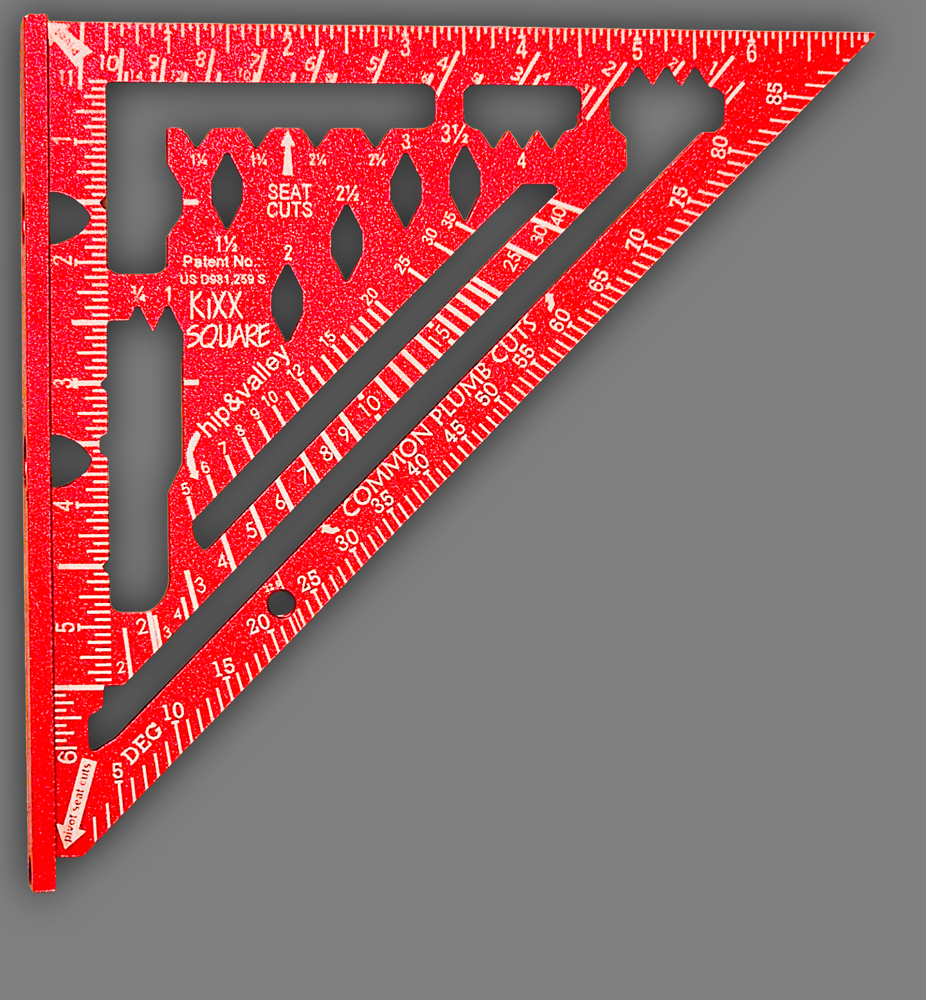

The all-in-one layout tool engineered for professional carpenters
Tired of juggling a tape measure, calculator, and three different squares just to frame a wall? The KiXX Square is the all-in-one layout tool engineered for professional carpenters. We built in the measurements, the math, and the shortcuts so you can work faster, reduce errors, and ditch the extra tools.
Get Your KiXX Square - $199.9930-Day Money-Back Guarantee | Made in USA
Six powerful features that replace multiple tools and eliminate guesswork
Forget the guesswork. The KiXX Square features large, cut-away notches and V-grooves for rapid stud layouts.
Get your drill position right the first time. The KiXX Square has a notched spine that fits around the anchor bolt, letting you mark the exact center.

Our Progressive Scribe feature makes it simple to draw lines parallel to the edge of a board.
For common cuts, speed is everything. The removable ¼" "Threaded pin" acts as a physical stop to get an immediate 22.5° angle or 5/12 roof pitch.
Marking a perfect bird's mouth is no longer a multi-step process. Our "Hip & Val" system simplifies it.
Leave the calculator in the truck. The spine of the KiXX Square is etched with the complex roof geometry tables you actually need on the job.
The KiXX Square is the one tool that does the work of five.
One-time investment in professional precision